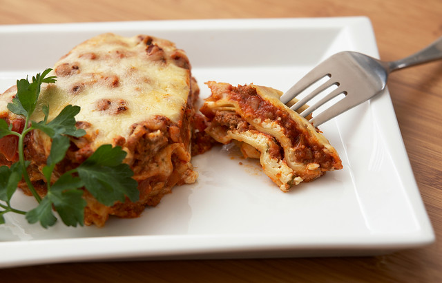

Home
Lasagna

Description
Lasagna, also known by the plural form lasagne, is a type of
pasta, possibly one of the oldest types, made in very wide,
flat sheets. In Italian cuisine it is made of stacked layers of
pasta alternating with fillings such as ragù (ground meats and
tomato sauce), béchamel sauce, vegetables, cheeses, and seasonings
and spices. The dish may be topped with grated cheese, which melts
during baking. Typically cooked pasta is assembled with the
other ingredients and then baked in an oven (al forno). The
resulting baked pasta is cut into single-serving square or
rectangular portions.
Ingredients
- Base
- 600g beef meat
- 300g bacon
- 1 onion
- 2 carrots
- 200g red wine
- 800g peeled tomatoes
- 50ml milk
- 3 olive oil spoons
- salt
- black pepper
- Pasta
- 200g flour
- 2 whole eggs
- 1 olive oil spoon
- pinch of salt
- Bechamel
- butter
- 80g flour
- 750ml milk
- 200g parmesan cheese
- salt
Steps
- Cut the bacon into small cubes.
- Put the bacon over medium heat so it cooks slowly.
- Cut the vegetables into small cubes.
- Add a drizzle of oil to the pan with the bacon and then, add the vegetables.
- Over medium-low heat, we cook until the onion, carrot and celery soften.
- Add the beef and raise the heat to medium-high and steer very well.
- Add 1 glass of red wine and cook until the alcohol evaporates.
- Add tomatoes and, when the sauce starts to boil, lower the heat and place the lid on, leaving a gap for steam to escape.
- Add the milk to balance out the acidity.
Pasta
- Don't make it yourself, just buy it.
Bechamel
- Melt the butter and add the flour.
- Saute the flour for 2-3 minutes over medium heat.
- Add cold milk and turn the heat to high.
- Stir until it thickens.
- As soon as it starts boiling, reduce the heat to menium for 2 minutes.
- Remove it from the heat and add salt.
Oven
- Preheat the oven to 180*C.
- Place the lasagna parts in their correct order.
- Bake it for 45 minutes and then, let it rest for 10 minutes.